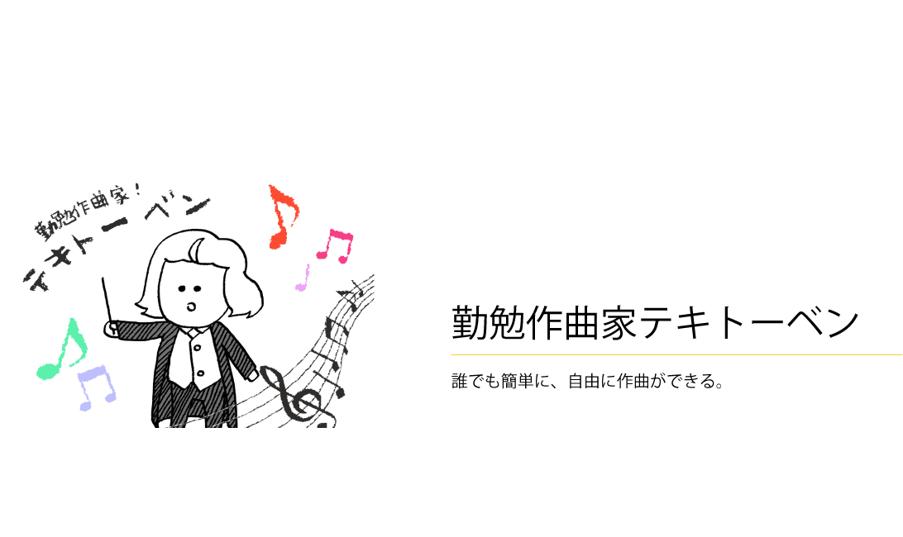
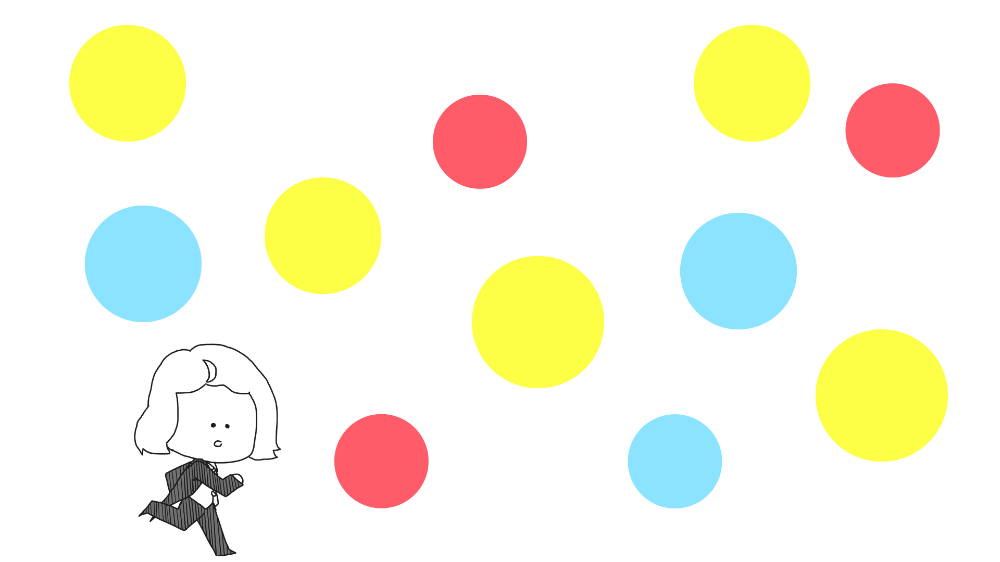
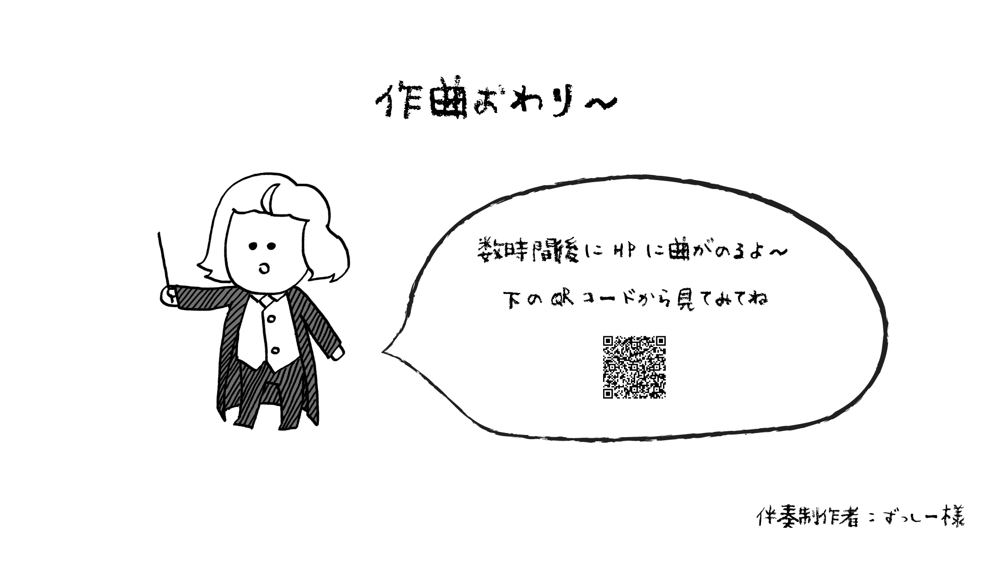

- 音楽を演奏したりして楽しめる楽器やコンテンツはたくさんあります。しかし、それは誰かが作った曲を演奏するという場合がほとんどで、自分で作曲をするという人は少ないです。
音楽が好きで日ごろから楽器を演奏する人でも作曲は難しく、なかなか手が出しにくいものであります。
そこで、音楽にあまり詳しくない人でもリズムにのって体を動かすだけで簡単に作曲ができるコンテンツ、勤勉作曲家テキトーベン"を制作しました。

- アイコンに触れて作曲する
- 伴奏のリズムに合わせてアイコンに触れて音を鳴らし、作曲をする。

- 配布画面
- 曲が配布されているQRコードが表示される。
-

- １、作曲ができる
- 作曲を簡単に行うことができる。
-

- ２、曲をダウンロードできる
- 作曲した曲を、特設サイトで聴いたり、ダウンロードしたりすることができる。
-

- ３、体を動かしてゲーム感覚で音楽を楽しむ
- 伴奏のリズム体を動かすだけで作曲ができるので、音楽の知識がない人でも音楽を楽しむことができる。
- この作品は、プロジェクト学習という授業で制作しました。
プロジェクト学習とは、公立はこだて未来大学で学部３年次に全学部生共通で行われる授業です。
全部で約20あるプロジェクトテーマから一つ挑戦したいものを選び、そのチームで1年間、コースの壁を越えて共にテーマに対して取り組んでいくという内容になっています。
数あるテーマの中から私は、「新体験開発プロジェクト」というプロジェクトを選びました。
新体験開発プロジェクトとは、人が今まで体験したことがないような体験ができるコンテンツを開発・提供することを目的としたプロジェクトです。
- Illustrator
- Photoshop
- Processing
- アイデア出し
- アイデア絞る
- プロトタイプ制作
- 中間発表→フィードバック
- フィードバックをもとに改善
- イベント出展→フィードバック
- 完成(→最終発表で披露)